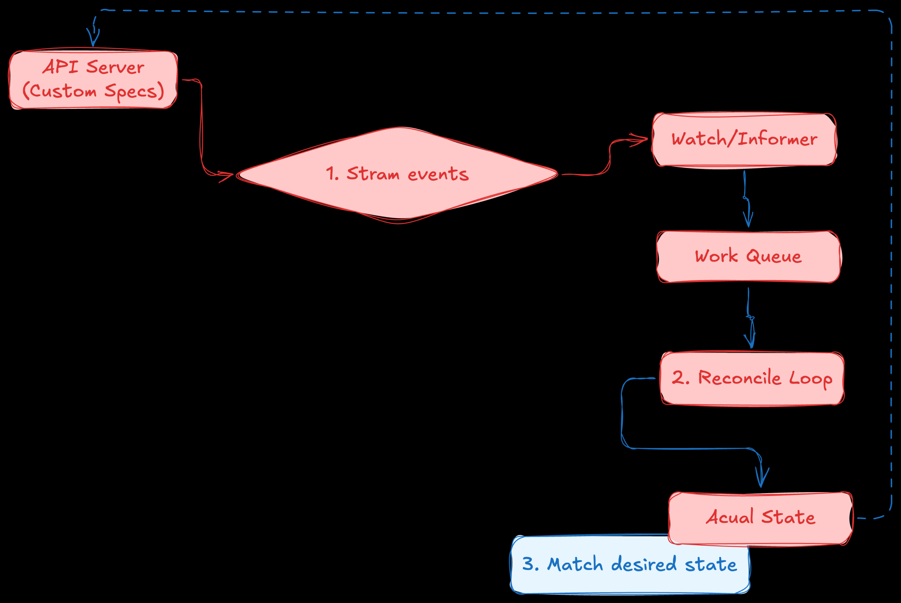

Custom Controller
A Custom Controller is an active background process (a software daemon) running inside your cluster that implements a continuous reconciliation loop.
While K8s comes built-in with standard controllers (which manages core primitives like standard Pods and Services), a custom controller extension written by an engineer to monitor a custom asset—usually a Custom Resource (CR). The custom controller is the intellectual brain of a K8s Operator. It encapsulates operational knowledge (like knowing how to gracefully scale down, take backups, or parse internal config changes) and translates it into automated code.
How does it work?
It works by declaring a subscription to events from the K8s API Server and running them through a strict, infinite loop cycle: Observe, Diff, and Act.

-
The Informer/Watcher Layer: The custom controller opens a persistent HTTP connection (a stream) to the K8s API Server. It listens exclusively for changes to specific objects.
-
Tell me whenever a user creates, updates, or deletes a resource of type
PostgresCluster
-
-
The Work Queue: When an event happens, the controller drops a unique reference key (like
namespace/resource-name) into a rate-limited work queue. This ensures that even if hundreds of modifications happen simultaneously, the controller process them safely without crashing.-
Give me an example
-
-
The Reconciliation loop: A worker thread pulls the key out of the queue and executes the core reconciliation function (
Reconcile()).-
Observe:
-
Diff:
-
Act:
-